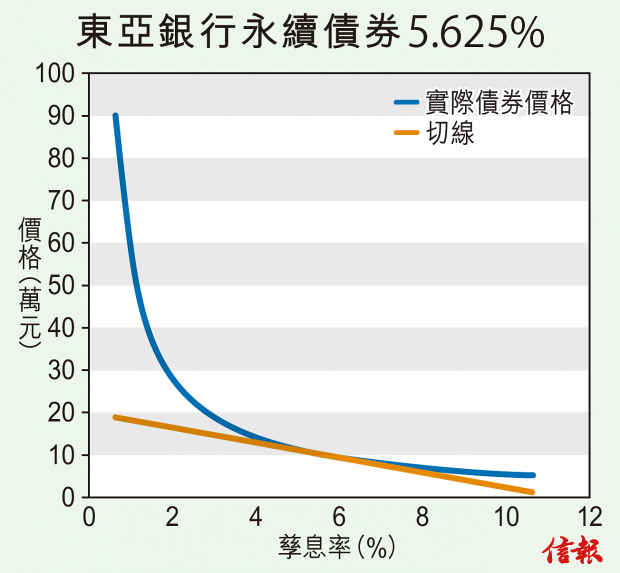

近10年來，不少在香港及內地的上市公司都開始發行永續債券（perpetual bond），香港投資者一般活躍於股票市場，對債券市場的認識不多，對永續債更是陌生，本文將為讀者作簡介。
認購者以價格P買入永續債券，發行者只會向購買者定期發放某一個固定的票息，但債券沒有到期日，發債機構永遠不會贖回債券，所以投資者不會收回面值，只能定期收到票息。投資者若不想再持有永續債券，只可以出售到債券的二手市場，賣出價格多少由市場決定。
永續債券歷史悠久，在十七世紀已經有機構發行永續債券。Dutch Water Authorities早在1648年便發行了永續債券集資用作維修河堤，耶魯大學在2003年購買了該債券作為收藏品，雖然作為收藏品，該債券依然定期發放票息，所以耶魯大學派人到阿姆斯特丹收取12年的票息，合共136.2歐羅。
在現今低息環境下，不少企業對發行永續債券感興趣，在2015年永續債券佔全年債券的發行總值3.4%，達38億美元。在香港和中國都有公司發行永續債券。
留意發債機構持續還款能力
如果投資者想購買永續債券，有以下的地方須留意。由於永續債券沒有到期日，所以發債機構的持續還款能力相當重要，投資者才能準時收到票息。
另外，永續債券的索償次序通常較低，在發債機構清盤時，後償債券（Subordinated bond）持有人，其索償的次序會後於其他債券的持有人。此外，出售時有沒有買家承接，也是考慮的因素。
對發債機構而言，發行永續債券有助降低負債比率，因為按照會計準則，永續債券的性質與普通股或優先股相近，所以永續債券屬於股東權益而非負債，永續債券的票息開支會當作股息支出，能夠粉飾企業的財務報表。
下表列出一些從網站bondsupermart找到的永續債券，我們篩選出部分恒生指數成分股公司所發行的永續債券。
以東亞銀行（00023）所發行的永續債券為例，信貸評級為BB/A-，該債券的票息率（coupon rate）為5.625%，但是屬後償債券，相對於對投資普通債券，投資者將會承受更大風險。
假如投資者以10萬美元投資於此債券，每年可以收回5625美元的票息，但永遠不能夠全部取回已投資的款項。由於孳息率會隨市場利率的變動而波動，所以債券的市場價格會隨利率而波動，投資者就會承受利率風險。如何量化這個利率風險，下文會作出介紹。
一般來說，由於永續債券沒有到期日，要吸引投資者買永續債，其票息率要較普通債券為高。但普通債和永續債的利率風險又如何比較呢？我們首先重溫一下普通債的利率風險。
本欄在上期介紹了如何計算普通債的久期來量度利率風險。久期是債券現金回流期的加權平均，當票息率很低時，久期差不多等於債券的年期。而利率風險跟債券的久期成正比。
由於永續債沒有到期日，那麼永續債的利率風險會不會是無限大呢？答案是否定的。
事實上，可以通過數學計算出永續債的價格和孳息率的關係。假如孳息率為y的話，現金流C以孳息率y折現到現在，其總和為C /（1+y）+ C /（1+y）2 + C /（1+y）3+ …. = C/y，所以債券的價格應為 P = C/y。假如y由5.625%上升一個百分點至6.625%，價格將由10萬美元跌至84906美元，投資者損失超過15000美元。
另外，亦可以用修正久期來量度永續債券的利率風險，而修正久期的計算方法很簡單，MD=1/y =1/5.625% =17.78。通過公式∆P/P≈-MD×∆y，可以計算出孳息率（y）上升1%（∆y=1%）後債券價跌的百分比，∆P/P≈-17.78×1% = -17.78%，即孳息率上升1%，債券的價格會下跌17.78%。以10萬美元為例，將會跌至82222美元，損失近18000美元。永續債券的久期愈長，對利率的變動愈敏感，利率風險愈高。
但值得留意的是，債券價格和債券收益之間的關係不是線性的，而是凸的，所以用修正久期只是債券價格變動的近似值，應以P=C/y去計算為準。如【圖】所示，切線是用修正久期所估算出的債券價格，但真正的價格是藍線，若孳息率改變的幅度愈大，存在的誤差會愈大。
由於永續債券的久期長，投資者可以透過購買永續債券來對債券組合進行久期管理。管理的關鍵在於對未來市場利率的預測。若預測未來利率將上升，則適度降低投資組合的久期；反之，則適度增加投資組合的久期。
市場上大部分的永續債券都屬於可贖回債券（Callable Bond），若利率下跌，債券被贖回的機會率提高，債券價格上升的潛力被限制，對投資者不利，所以債券價格會比沒有嵌入式認購期權 （Embedded Call Option）的債券為低，以補償投資者所承受的額外風險。
此外，有些到期日非常長的債券，也被視為永續債券。以中國銀行（03988）的永續債券為例，其到期日為2049年10月23日，所以也被視作永續債券。
本欄對永續債券作出簡單的介紹，但並非鼓勵讀者購買永續債券，永續債券的價格對孳息率變動非常敏感，若預期未來利率上調，目前可能不是買入永續債券的好時機。
陸俊杰為金融交易員
鄒小敏為理工大學專業進修學院客席講師
林建教授為香港浸會大學榮休教授兼香港大學統計精算學系榮譽教授
Article from HKEJ Source